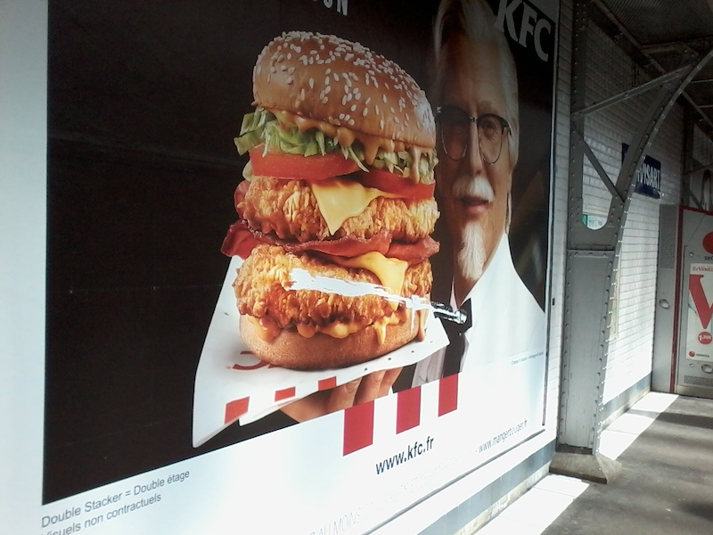
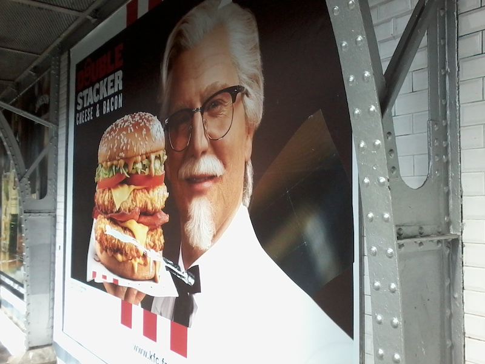

 Paris Metro, March 2018. Image credit: RC
Perspective matters in billboards. Users are not and cannot be disembodied observers, looking at the image from the implicit nowhere adopted by the designer. They walk in metro stations, under vaulted ceilings, approach the billboard and look back. The physical process of moving around a billboard can be rewarding, to a point. The misleading perspectival effect researched by the designer (a decontextualized hand offers a giant layered hamburger) is modulated by the perspectival effect of looking at the billboard from an advantageous position: as one walks, the giant hamburger dramatically shrinks to a more reasonable, and in any event less misleading, size.